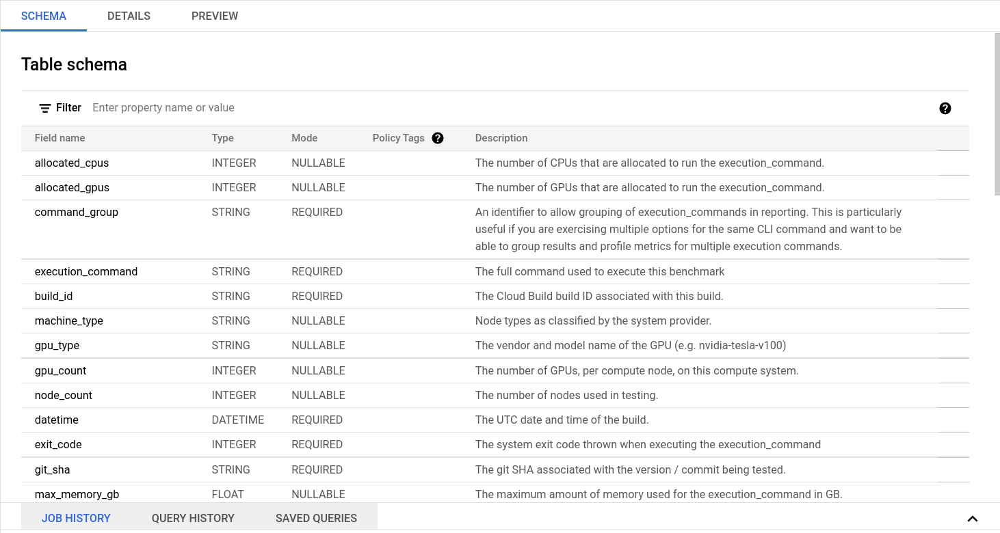
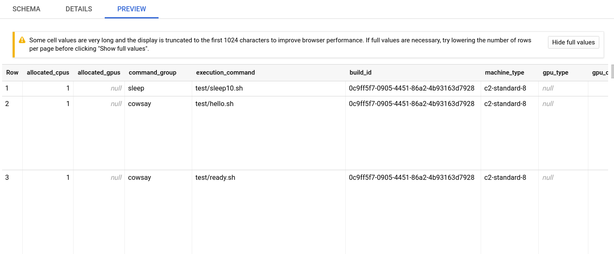

Ephemeral RCC Tutorial¶
Fluid Run can be used to create ephemeral compute resources for testing HPC applications and to record information about the test for later analysis. This quickstart guide will introduce you to the necessary ingredients for configuring application tests with fluid-run, using an ephemeral Research Computing Cluster (RCC).
Demo¶
You will start by using the rcc-ephemeral example provided in the fluid-run repository. This example creates a Singularity image with the cowsay program installed on it and then runs tests for this image on an ephemeral RCC cluster. You will learn how to set up your Google Cloud project and create the necessary resources to support application testing, benchmarking, and logging.
Google Cloud Project Setup¶
To complete this tutorial, you will need to have an active project on Google Cloud. Sign up and create your first project by visiting https://console.cloud.google.com
Once your project is ready, open Cloud Shell
You will need to activate the following Google Cloud APIs
- Compute Engine
- Cloud Build
- Big Query
- Identity & Access Management (IAM)
gcloud config set project PROJECT-ID
gcloud services enable compute.googleapis.com
gcloud services enable bigquery.googleapis.com
gcloud services enable iam.googleapis.com
gcloud services enable cloudbuild.googleapis.com
Create a fluid-run Docker image¶
The fluid-run application is a Cloud Build builder. A Cloud builder is a Docker image that provides an environment and entrypoint application for carrying out a step in a Cloud Build pipeline. You can create the fluid-run docker image and store it in your Google Cloud project’s Container Registry.
Open Cloud Shell and clone the fluid-run repository.
$ git clone https://github.com/FluidNumerics/fluid-run.git ~/fluid-run
Once you’ve cloned the repository, navigate to the root directory of the repo and trigger a build of the docker image.
$ cd ~/fluid-run/
$ gcloud builds submit . --config=ci/cloudbuild.yaml --substitutions=SHORT_SHA=latest
This will cause Google Cloud build to create the fluid-run docker image gcr.io/${PROJECT_ID}/fluid-run:latest that you can then use in your project’s builds.
Create the CI/CB Dataset¶
The CI/CB dataset is a Big Query dataset that is used to store information about each test run with fluid-run. This includes runtimes for each execution command used to test your application. The fluid-run repository comes with a terraform module that can create this dataset for your project. We’ve also included an example under the examples/rcc-ephemeral directory that you will use for the rest of this tutorial.
Navigate to the examples/rcc-ephemeral/ci/build_iac directory
$ cd ~/fluid-run/examples/rcc-ephemeral/ci/build_iac
The ci/build_iac subdirectory contains the Terraform infrastructure as code for provisioning a VPC network, firewall rules, service account, and the Big Query dataset that all support using fluid-run. This example Terraform module is a template for creating these resources, and the fluid.auto.tfvars file in this directory is used to concretize certain variables in the template, so that you can deploy the resources in your project.
Open fluid.auto.tfvars in a text editor and set <project> to your Google Cloud Project ID. The command below will quickly do the search and replace for you.
$ sed -i "s/<project>/$(gcloud config get-value project)/g" fluid.auto.tfvars
Now, you will execute a workflow typical of Terraform deployments to initialize, validate, plan, and deploy. All of the commands are shown below, but you should review the output from each command before executing the next.
$ terraform init
$ terraform validate
$ terraform plan
$ terraform apply --auto-approve
Once this completes, you’re ready to run a build using fluid-run.
Manually Trigger a build¶
Cloud Build pipelines for a repository are specified in a build configuration file written in YAML syntax. In this example, three build steps are provided that create a Docker image, create a Singularity image, and test the Singularity image on an ephemeral RCC cluster. A singularity image is created since, currently, fluid-run only supports testing of GCE VM images and Singularity images. However, as you can see, Singularity can convert a Docker image to a Singularity image that can be passed to fluid-run.
steps:
- id: Build Docker Image
name: 'gcr.io/cloud-builders/docker'
args: ['build',
'.',
'-t',
'gcr.io/${PROJECT_ID}/cowsay:latest'
]
- id: Build Singularity Image
name: 'quay.io/singularity/singularity:v3.7.1'
args: ['build',
'cowsay.sif',
'docker-daemon://gcr.io/${PROJECT_ID}/cowsay:latest']
- id: CI/CB
name: 'gcr.io/research-computing-cloud/fluid-run'
args:
- '--build-id=${BUILD_ID}'
- '--git-sha=${COMMIT_SHA}'
- '--surface-nonzero-exit-code'
- '--artifact-type=singularity'
- '--singularity-image=cowsay.sif'
- '--image=${_IMAGE}'
- '--project=${PROJECT_ID}'
- '--zone=${_ZONE}'
- '--cluster-type=rcc-ephemeral'
- '--rcc-tfvars=ci/fluid.auto.tfvars'
- '--save-results'
timeout: 1800s
substitutions:
_ZONE: 'us-west1-b'
_IMAGE: 'projects/research-computing-cloud/global/images/family/rcc-centos-7-v3'
To manually trigger a build, you can use the gcloud builds submit command in your cloud shell. Navigate to the rcc-ephemeral example directory, and submit the build
$ cd ~/fluid-run/examples/rcc-ephemeral/
$ gcloud builds submit . --config=ci/cloudbuild.yaml
Note that the cloud build can be run asynchronously by passing the --async flag as well. If you run asynchronously, you can view the status of the build at the Cloud Build Console.
View Data in Big Query¶
Once the build is complete, the run-time and other data for each execution command is posted to the fluid_cicb dataset in Big Query. In your browser, navigate to Big Query.
In the data explorer panel on the left-hand side, find your Google Cloud project and expand the dropdown menu.
{kind=link}
Find the fluid-cicb dataset and the app_runs table. Once you’ve selected the app_runs table, select preview.
{kind=link}
At this point, you now have a dataset hosted in Google Cloud. The fluid-run build step with Google Cloud Build will allow you to automate testing and benchmarking of your application and will post results to this dataset.
Dashboarding and other post-processing¶
From here, it is helpful to visualize results. There are a number of solutions available for visualizing data stored in Big Query. Below are a couple dashboard examples using Data Studio with the fluid_cic data set, to give you an idea of where you can take this.
Example Pass-Fail Report

Example Runtime Report
In addition to dashboarding, having a dataset that tracks the performance of your application over time and on a variety of hardware can enable you to automatically check for performance regressions or uncovers performance portability issues. You can write application in C#, Go, Java, Node.js, PHP, Python, and Ruby using the Big Query API to interact with the dataset to add further post-processing and verification to your builds.
Delete Resources¶
If you’ve worked through this tutorial on a Google Cloud project where you will continue setting up a CI/CB workflow for your application, you can keep using the resources you’ve created. However, if you need to tear down the resources created during this tutorial, you can use the commands below
$ cd ~/fluid-run/examples/rcc-ephemeral/ci/build_iac
$ terraform destroy --auto-approve